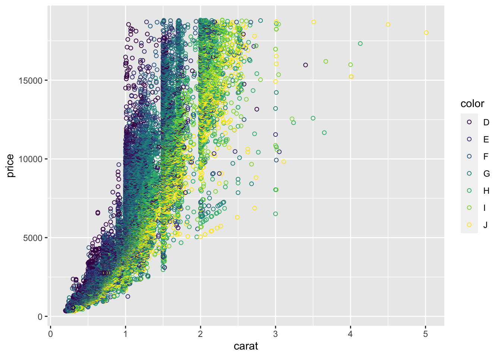
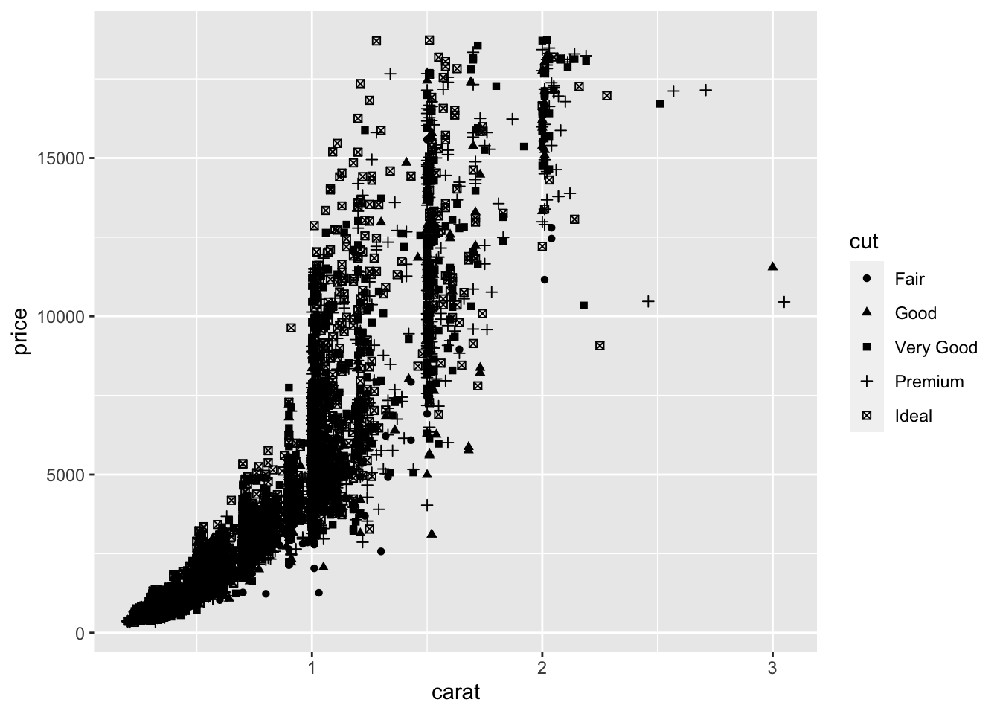
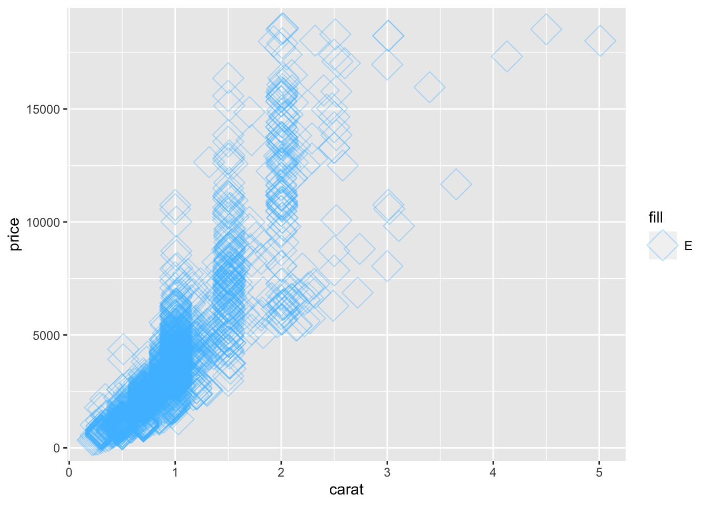
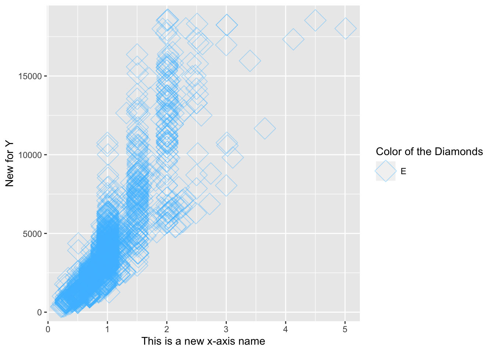
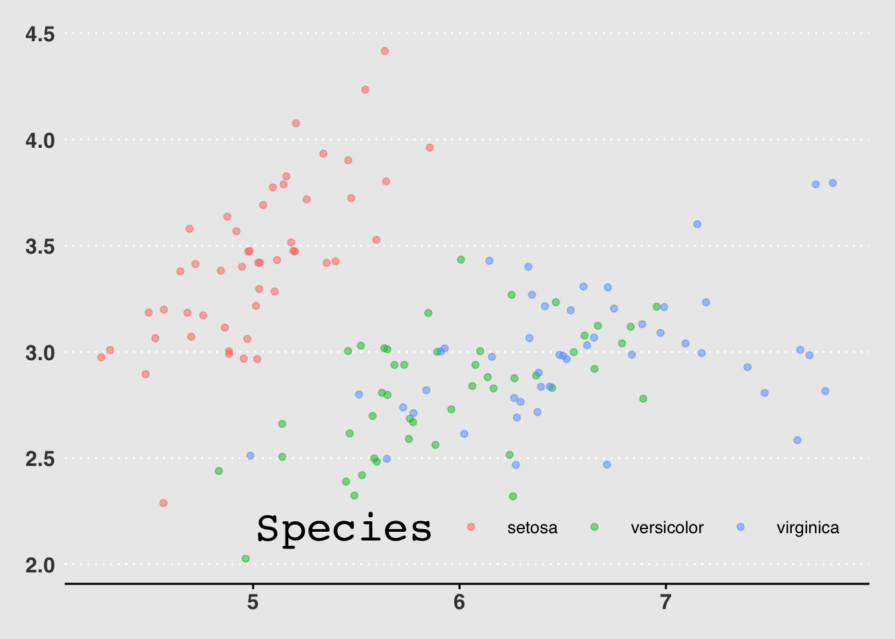

4 Intro to Data Visualization with ggplot2
https://learn.datacamp.com/courses/introduction-to-data-visualization-with-ggplot2
4.1 Introduction
Changing One Geom Or Every Geom
If you have multiple geoms, then mapping an aesthetic to data variable inside the call to ggplot() will change all the geoms. It is also possible to make changes to individual geoms by passing arguments to the geom_*() functions.
geom_point() has an alpha argument that controls the opacity of the points. A value of 1 (the default) means that the points are totally opaque; a value of 0 means the points are totally transparent (and therefore invisible). Values in between specify transparency.
geom_smooth() adds a smooth trend curve.
ggplot(diamonds, aes(carat, price, color = clarity)) +
geom_point(alpha = 0.4) +
geom_smooth()## `geom_smooth()` using method = 'gam' and formula 'y ~ s(x, bs = "cs")'
Saving Plots As Variables
Plots can be saved as variables, which can be added two later on using the + operator. This is really useful to make multiple related plots from a common base.
# Assign the previous plot to a variable to make a base:
plt_price_vs_carat <- ggplot(diamonds, aes(carat, price))
# Assign the base plot to make a new plot:
plt_price_vs_carat_by_clarity <- plt_price_vs_carat + geom_point(aes(color = clarity))
# See the plot
plt_price_vs_carat_by_clarity
4.2 Aesthetics
Typical Visible Aesthetics
## Aesthetic Description
## 1 x X-axis position
## 2 y Y-axis position
## 3 fill Fill color
## 4 color Color of points, outlines of other geoms
## 5 size Area or radius of points, thickness of lines
## 6 alpha Transparency
## 7 linetype Line dash pattern
## 8 labels Text on a plot or axes
## 9 shape ShapeAll About Aesthetics: Color, Shape And Size
These are the aesthetics to can consider within aes(): x, y, color, fill, size, alpha, labels and shape.
diamonds## # A tibble: 53,940 × 10
## carat cut color clarity depth table price x y z
## <dbl> <ord> <ord> <ord> <dbl> <dbl> <int> <dbl> <dbl> <dbl>
## 1 0.23 Ideal E SI2 61.5 55 326 3.95 3.98 2.43
## 2 0.21 Premium E SI1 59.8 61 326 3.89 3.84 2.31
## 3 0.23 Good E VS1 56.9 65 327 4.05 4.07 2.31
## 4 0.29 Premium I VS2 62.4 58 334 4.2 4.23 2.63
## 5 0.31 Good J SI2 63.3 58 335 4.34 4.35 2.75
## 6 0.24 Very Good J VVS2 62.8 57 336 3.94 3.96 2.48
## 7 0.24 Very Good I VVS1 62.3 57 336 3.95 3.98 2.47
## 8 0.26 Very Good H SI1 61.9 55 337 4.07 4.11 2.53
## 9 0.22 Fair E VS2 65.1 61 337 3.87 3.78 2.49
## 10 0.23 Very Good H VS1 59.4 61 338 4 4.05 2.39
## # … with 53,930 more rowsggplot(diamonds, aes(carat, price, color = color)) +
# Set the shape and size of the points
geom_point(shape = 1, size = 1.5)
All About Aesthetics: Color VS. Fill
Typically, the color aesthetic changes the circumference line of a geom and the fill aesthetic changes the inside. geom_point() is an exception: you use color (not fill) for the point color.
The default geom_point() uses shape = 19: a solid circle. An alternative is shape = 21: a circle that allow you to use both fill for the inside and color for the outline. This is lets you to map two aesthetics to each point:
ggplot(diamonds, aes(carat, price, fill = clarity, color = color)) +
geom_point(shape = 21, size = 4, alpha = 0.6)
All About Aesthetics: Alpha, Shape And Label
# Base layer
diamonds_E <- diamonds %>%
filter(color == "E")
plt_diam_E <- ggplot(diamonds_E, aes(carat, price))
# Map clarity to alpha:
plt_diam_E +
geom_point(aes(alpha = clarity))
Use shape() function to substitute the observation symbols displayed in the plot into another variable:
# Base layer
diamonds_E <- diamonds %>%
filter(color == "E")
plt_diam_E <- ggplot(diamonds_E, aes(carat, price))
# Map cut to alpha:
plt_diam_E +
geom_point(aes(shape = cut))## Warning: Using shapes for an ordinal variable is not advised
Use label() function to change the observation symbols displayed in the plot:
diamonds_Fair <- diamonds %>%
filter(cut == "Fair")
plt_diam_Fair <- ggplot(diamonds_Fair, aes(carat, price))
# Use text layer and map color to label
plt_diam_Fair +
geom_text(aes(label = color))
All About Attributes: Color, Shape, And Size
Use color(), shape(), and size() functions as attributes (means to not use inside ggplot()):
# A hexadecimal color
my_blue <- "#4ABEFF"
# Change the color mapping to a fill mapping
ggplot(diamonds_Fair, aes(carat, price, fill = "E")) +
# Set point size and shape
geom_point(color = my_blue, size = 7, shape = 5, alpha = 0.4)
Aesthetic Label Functions
Make use some of these functions for improving the appearance of the plot:
labs() to set the x- and y-axis labels. It takes strings for each argument.
scale_color_manual() defines properties of the color scale (i.e. axis). The first argument sets the legend title. values is a named vector of colors to use.
palette <- c(E = "#377EB8")
ggplot(diamonds_Fair, aes(carat, price, fill = "E")) +
geom_point(color = my_blue, size = 7, shape = 5, alpha = 0.4) +
labs(x = "This is a new x-axis name", y = "New for Y") +
scale_fill_manual("Color of the Diamonds", values = palette)
Setting Axis Limits
Specify the limits as separate arguments, or as a single numeric vector. That is, ylim(lo, hi) or ylim(c(lo, hi)).
ggplot(mtcars, aes(mpg, 0)) +
geom_jitter() +
# Set the y-axis limits
ylim(-2, 2) To spread out clustered variables use
To spread out clustered variables use geom_jitter() or geom_point(position = "jitter").
4.3 Geometries
Scatter plots (using geom_point()) are intuitive, easily understood, and very common, but we must always consider overplotting, particularly in the following four situations:
1. Large datasets
2. Aligned values on a single axis
3. Low-precision data
4. Integer dataHow to Deal with Overplotting In Scatter Plots
Adjust the numeric value in shape() function into "."to deal with overflowed data:
# Plot price vs. carat, colored by clarity
plt_price_vs_carat_by_clarity <- ggplot(diamonds, aes(carat, price, color = clarity))
# Add a point layer with tiny points
plt_price_vs_carat_by_clarity + geom_point(alpha = 0.5, shape = ".")
How to Deal with “Aligned Values” And “Low-precision Data” In Scatter Plots
Aligning values on a single axis occurs when one axis is continuous and the other is categorical, which can be overcome with some form of jittering:
ggplot(iris, aes(Sepal.Length, Sepal.Width, color = Species)) +
# Set the position to jitter
geom_point(position = "jitter", alpha = 0.5)
Another way to jitter which gives the same result is:
ggplot(iris, aes(Sepal.Length, Sepal.Width, color = Species)) +
# Use a jitter position function with width 0.1
geom_point(position = position_jitter(width = 0.1), alpha = 0.5) 
Positions In Histograms
Histograms are specialized versions of bar plots.
There’re various ways of applying positions to histograms. geom_histogram(), a special case of geom_bar(), has a position argument that can take on the following values:
stack(the default): Bars for different groups are stacked on top of each other.dodge: Bars for different groups are placed side by side.geom_histogram(binwidth = 1, position = “dodge”)
fill: Bars for different groups are shown as proportions.geom_histogram(binwidth = 1, position = “fill”)
identity: Plot the values as they appear in the dataset.geom_histogram(binwidth = 1, position = “identity,” alpha = 0.4)
Bar Plots
geom_bar() counts the number of cases at each x position.
geom_col() plot actual values.
NOTE:the function geom_col() is just geom_bar() where both the position and stat arguments are set to “identity.” It is used when we want the heights of the bars to represent the exact values in the data.
geom_bar() have three position options:
stack: The default
dodge: Preferredgeom_bar(position = “dodge”)
fill: To show proportionsgeom_bar(position = “fill”)
Overlapping Bar Plots
Instead of using position = "dodge", use position_dodge(), the same with position_jitter() to specify how much dodging (or jittering) wanted.
geom_bar(position = position_dodge(width = 0.2))4.4 Themes
The themes layer is the visual elements that aren’t part of the data. There’re 3 types:
## types modified_using
## 1 text element_text()
## 2 line element_line()
## 3 rectangle element_rect()To change stylistic elements of a plot, call theme() and set plot properties to a new value.
Moving The Legend
The legend is that little box on the right side of the plot that shows up when functions like color or shape is plotted:
p + theme(legend.position = new_value)The new value can be:
"top", "bottom", "left", or "right'": place it at that side of the plot.
"none": don't draw it.” c(x, y)“:”c(0, 0)” means the bottom-left and “c(1, 1)” means the top-right.
ggplot(iris, aes(Sepal.Length, Sepal.Width, color = Species)) +
geom_point(position = position_jitter(width = 0.1), alpha = 0.5) +
theme(legend.position = "left")
Modifying Theme Elements
Many plot elements have multiple properties that can be set.
Line elements in the plot such as axes and gridlines have a color, a thickness (size), and a line type (solid line, dashed, or dotted). To set the style of a line, you use element_line(). For example, to make the axis lines into red, dashed lines:
p + theme(axis.line = element_line(color = "red", linetype = "dashed"))Similarly, element_rect() changes rectangles and element_text() changes text. To remove a plot element, use element_blank().
ggplot(iris, aes(Sepal.Length, Sepal.Width, color = Species)) +
geom_point(position = position_jitter(width = 0.1), alpha = 0.5) +
theme(legend.position = "left",
rect = element_rect(fill = "grey92"),
legend.key = element_rect(color = NA),
# Turn off axis ticks
axis.ticks = element_blank(),
# Turn off the panel grid
panel.grid = element_blank()
)
Modifying Whitespace
Whitespace means all the non-visible margins and spacing in the plot.
To set a single whitespace value, use unit(x, unit), where x is the amount and unit is the unit of measure.
Borders have 4 positions, use margin(top, right, bottom, left, unit). The margin order is in a clock-wise position starting from 12 o’clock.
The default unit is "pt" (points), which scales well with text. Other options include "cm", "in" (inches) and "lines" (of text).
ggplot(iris, aes(Sepal.Length, Sepal.Width, color = Species)) +
geom_point(position = position_jitter(width = 0.1), alpha = 0.5) +
theme(legend.margin = margin(1, 1, 70, 10, "mm"))
Built-in Themes
In addition to making your own themes, there are several out-of-the-box solutions that may save you lots of time.
"theme_gray()" is the default.
"theme_bw()" is useful when you use transparency.
"theme_classic()" is more traditional.
"theme_void()" removes everything but the data.Setting Themes
Install the package ggthemes, which is a another source of built-in themes just like ggplot2.
Reusing a theme across many plots helps to provide a consistent style. You have several options for this.
1. Assign the theme to a variable, and add it to each plot.
2. Set the theme as the default using "theme_set()".library(ggthemes)
new_theme <- theme(
rect = element_rect(fill = "grey92"),
legend.key = element_rect(color = NA),
axis.ticks = element_blank(),
panel.grid = element_blank(),
panel.grid.major.y = element_line(color = "white", size = 0.5, linetype = "dotted"),
axis.text = element_text(color = "grey25"),
plot.title = element_text(face = "italic", size = 16),
legend.position = c(0.6, 0.1)
)
# Combine the WSJ theme with new_theme
new_theme_wsj <- theme_wsj() + new_theme
# Add the combined theme to the plot
ggplot(iris, aes(Sepal.Length, Sepal.Width, color = Species)) +
geom_point(position = position_jitter(width = 0.1), alpha = 0.5) +
new_theme_wsj
NOTE: add another theme after an already existing theme to overide the settings of the previous theme.
Using Geoms For Explanatory Plots
This type of plot will be in an info-viz style, meaning that it would be similar to something you’d see in a magazine or website for a mostly lay audience.
# Add a geom_segment() layer (Key component to create the plot structure below)
ggplot(gm2007, aes(x = lifeExp, y = country, color = lifeExp)) +
geom_point(size = 4) +
geom_segment(aes(xend = 30, yend = country), size = 2) +
# Add a geom_text() layer
geom_text(aes(label = round(lifeExp,1)), color = "white", size = 1.5) +
# Modify the scales
scale_x_continuous("", expand = c(0,0), limits = c(30,90), position = "top") +
# Add a title and caption
labs(title = "Highest and lowest life expectancies, 2007", caption = "Source: gapminder")